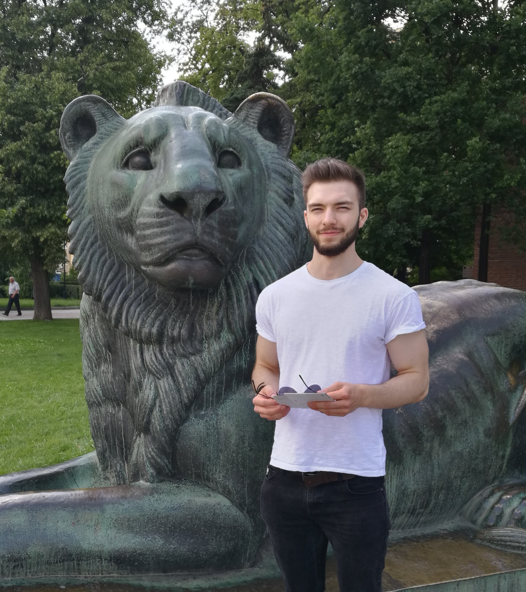

Matthias Wright
About Me
I am a PhD student in the Computer Vision Group at Heidelberg University.
Previously, I completed my MSc in Machine Learning and Autonomous Systems at the University of Bath. Prior to my studies at Bath, I completed a degree apprenticeship program called MATSE offered jointly by RWTH Aachen University, Aachen University of Applied Sciences, and the Chamber of Commerce and Industry, Aachen. As part of this program, I completed a bachelor's degree program in Applied Mathematics and Computer Science at Aachen University of Applied Sciences and a CCI-certified vocational training program in Software Development at RWTH Aachen University while working as a junior software developer at the Department of Medical Informatics at RWTH Aachen University (more information).
If you have any questions, feel free to contact me.
Previously, I completed my MSc in Machine Learning and Autonomous Systems at the University of Bath. Prior to my studies at Bath, I completed a degree apprenticeship program called MATSE offered jointly by RWTH Aachen University, Aachen University of Applied Sciences, and the Chamber of Commerce and Industry, Aachen. As part of this program, I completed a bachelor's degree program in Applied Mathematics and Computer Science at Aachen University of Applied Sciences and a CCI-certified vocational training program in Software Development at RWTH Aachen University while working as a junior software developer at the Department of Medical Informatics at RWTH Aachen University (more information).
If you have any questions, feel free to contact me.
Education
Dec 2019 - Present
Heidelberg University, Germany
Ph.D. in Computer Science (Computer Vision / Deep Learning)
Computer Vision Group, Heidelberg Collaboratory for Image Processing
Advisor: Prof. Björn Ommer
Ph.D. in Computer Science (Computer Vision / Deep Learning)
Computer Vision Group, Heidelberg Collaboratory for Image Processing
Advisor: Prof. Björn Ommer
Oct 2018 - Sep 2019
University of Bath, United Kingdom
M.Sc. in Machine Learning and Autonomous Systems
Department of Computer Science
Thesis: A Siamese Architecture for Neural Style Transfer
M.Sc. in Machine Learning and Autonomous Systems
Department of Computer Science
Thesis: A Siamese Architecture for Neural Style Transfer
Sep 2015 - Aug 2018
Aachen University of Applied Sciences, Germany
B.Sc. in Applied Mathematics and Computer Science
Thesis: Detecting Abnormalities in Clinical Data with GANs
B.Sc. in Applied Mathematics and Computer Science
Thesis: Detecting Abnormalities in Clinical Data with GANs
Sep 2015 - Aug 2018
Aachen Chamber of Industry and Commerce, Germany
Apprenticeship as a Mathematical-Technical Software Developer
Apprenticeship as a Mathematical-Technical Software Developer
Experience
Sep 2015 - Aug 2018
RWTH Aachen University, Germany
Software Developer
Software Developer